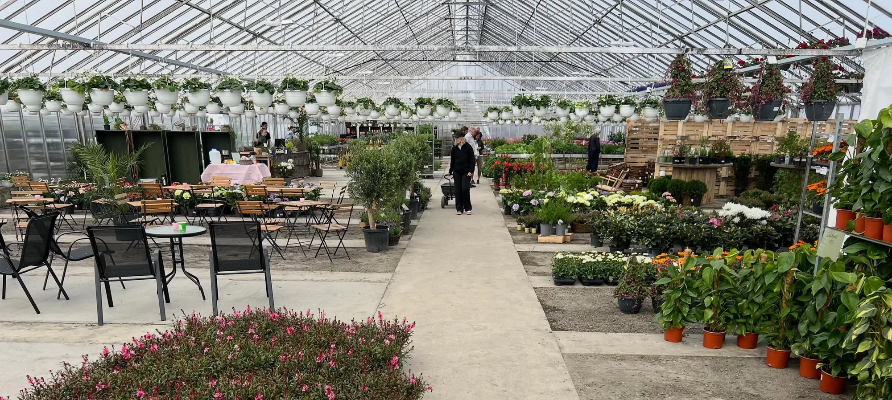
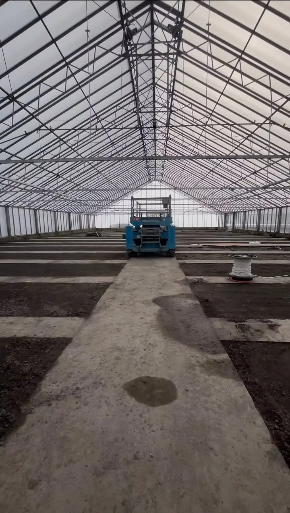
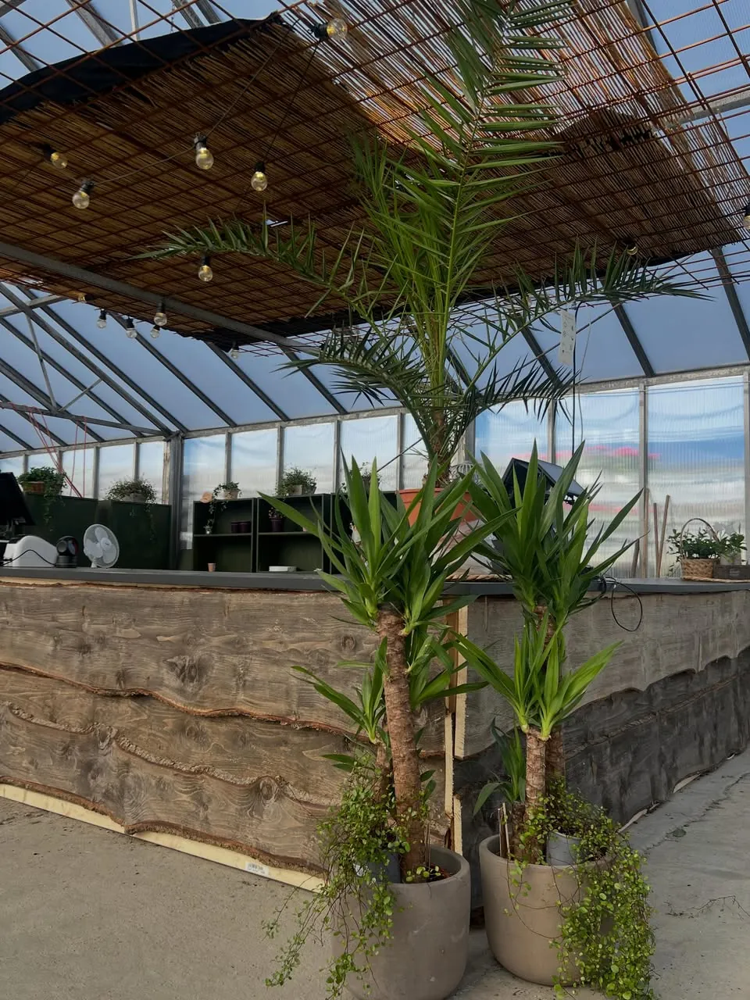
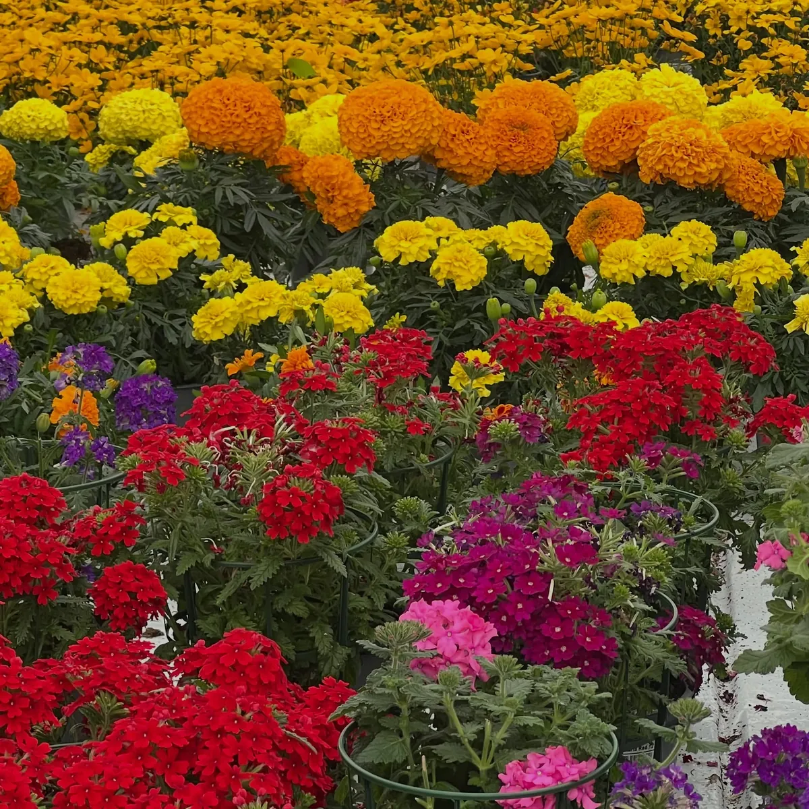
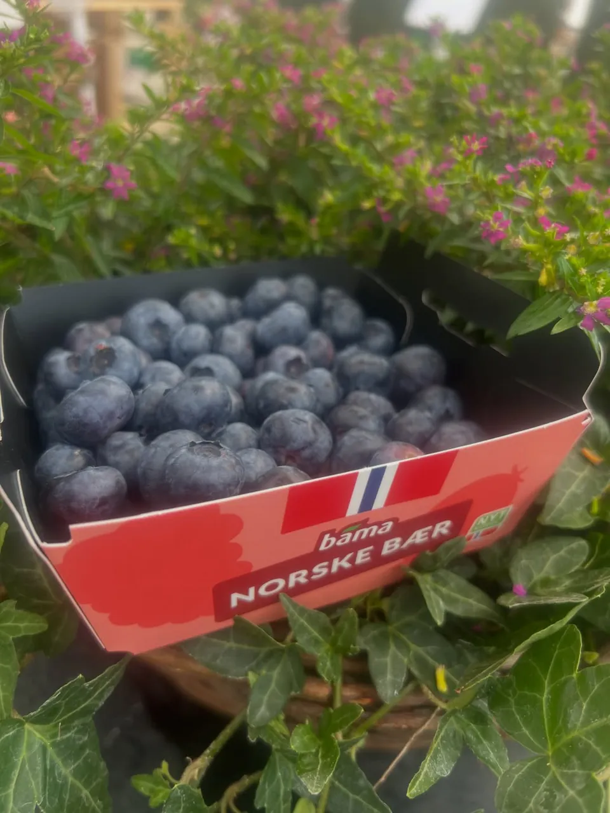

Blomster rett fra gartneriet
Vi holder til i et veksthus fra 1972 på Dilling i Rygge. Her selger vi blomster og planter som er dyrket i gartneriet rett ved siden av.
Åpent alle dager, hele uka.

Dyrket 200 meter unna
Gartneriet har røtter i Moss som går over 130 år tilbake, og Magne Bergerud er tredje generasjon på gården i Rygge. Til vanlig sendes blomstene herfra til grossister og butikkjeder.
Våren 2026 ryddet vi et av de gamle veksthusene og åpnet dørene. Nå kan du handle blomstene der de har vokst opp. De fleste har ikke reist lenger enn 200 meter.
Vi fyller også på med stueplanter, stauder, busker, frukttrær, urter, krukker og jord. Det står kaffe på kanna, og det er helt greit å bare komme innom for å kikke.


Jul i drivhuset
Julestjernene, azaleaene, amaryllisene og julerosene kommer rett fra gartneriet til Magne. Vi har også kranser, granbuketter, gravlys og en liten julebutikk med pynt og gaver.
Lørdag 21. og søndag 22. november får vi besøk av Kalle og Paal fra Guttas Blomster. Kalle binder buketter og kranser, og Paal har med seg egg, poteter og eplemost. Åpent lørdag 10 til 16 og søndag 11 til 16.


Det du finner hos oss
Utvalget skifter med årstidene og med det som er klart i gartneriet. Dette har vi som regel.



Mat fra gårdene rundt oss
I kjøledisken ligger ost fra Rygge meieri. Eplemosten kommer fra Olseng i Skjeberg, og blåbærene plukker vi på vårt eget jorde. Om høsten henter vi gresskar fra Vestre Bjølsund gård.
Trenger du en gave, setter vi gjerne sammen en kurv med blomster og noe godt, i den prisklassen du ønsker. Vi har gavekort også.




Gjennom året
- Vår
- Sommerblomster, ampler, urter og stauder til hagen og balkongen. Mye av det er sådd og stelt i gartneriet siden vinteren.
- Sommer
- Utpå sommeren modner blåbærene på jordet. Da kan du plukke selv, eller kjøpe ferdig plukket i butikken.
- Høst
- Lyng, krysantemum, høststjerner og blomsterløk. Før Halloween rydder vi plass så du kan skjære ut gresskar i drivhuset og slippe sølet hjemme.
- Jul
- Julestjerner fra gartneriet, kranser og granbuketter. I november holder Tone kranseverksted for dem som vil binde sin egen.